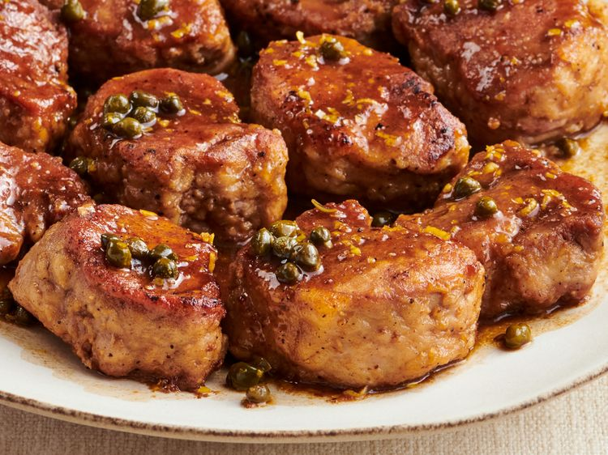

Pork Medallions with Blasmic Vinegar and Capers
Home

Description
Skillet dish featuring quick-seared slices of pork tenderloin finished with a glossy, sweet and savoury reduction sauce
It relies on sweet and sour flavour profile: the deep caramel sweetness and acidity of reduced blasmic vinegar cut through the richness of pork, while briny, salted capers provide sharp bursts that keep the sauce lively and balanced
Ingredients
- 1/4 cup all-purpose flour
- 1 teaspoon garlic salt, or to taste
- 910 grams pork tenderloin, cut into 4 cm pieces
- 2 tablespoons olive oil
- 1/3 cup blasmic vinegar
- 1/2 cup chicken broth
- 2 teaspoons minced lemon zest, or to taste
- 1 tablespoon capers, or to taste
Steps
- Place the flour, garlic salt and pepper into a plastic bag
- Shake to mix
- Add the pork pieces
- Shake again to coat
- Heat the olive oil in a large skillet over medium heat
- Cook the pork medallions for about 2-3 minutes on each side
- Pour in blasmic vinegar and chicken broth
- Bring to a boil
- Reduce heat to medium
- Simmer until pork is no longer pink in the centre
- Remove the pork to a serving platter
- Stir the lemon zest and capers into the simmering sauce
- Continue stiring until the sauce has thickened to your desired consistency